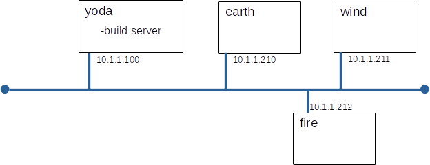

The secure shell (ssh) has become the de facto standard for remote access to UNIX servers. It can be used to provide: interactive sessions, file transfer, remote command execution, and TCP tunnels. Passwords or cryptographic keys may be use for authentication. Today we will investigate these ssh features.
You will build this configuration.

Here's an other chance to show how much easier our lives are because we have a build server.
Build earth, wind, and fire to these specifications:
10.1.1.210 earth 10.1.1.211 wind 10.1.1.212 fire
Note: The 'Slick, Fast' strategy is recommended.
Note: These examples assume winds' Ethernet address is 08:00:27:68:A8:B1 - your's will be different, and they often show only the configuration changes need for wind - you will need to add code blocks for earth and fire where appropriate.
#
# host specific block for wind
# (note: ethernet address must match nodes' address
#
host wind {
option host-name "wind";
hardware ethernet 08:00:27:68:A8:B1;
fixed-address 10.1.1.211;
}
cd /var/lib/tftpboot/pxelinux.cfg # a pxe config file for lab_03 cp default lab_03 # point earth to the correct config, note: 0A0101D2 is 10.1.1.210 in hex, try gethostip 10.1.1.210 ln -s lab_03 0A0101D2 # point wind to the correct config ln -s lab_03 0A0101D3 # point fire to the correct config ln -s lab_03 0A0101D4
label linux menu label Install system menu default kernel images/RHEL-8.3/vmlinuz append initrd=images/RHEL-8.3/initrd.img ip=dhcp inst.repo=http://10.1.1.100/83 ks=http://10.1.1.100/Kickstart/lab_03.ks inst.kdump_addon=off
# set the firewall to allow only ssh firewall --enabled --ssh # add a user named alice user --name=alice --groups=wheel --password=userpass # hosts (goes in %post section) echo "10.1.1.100 yoda" >>/etc/hosts
Let's just have a quick look about to see that everything is as it should be.
A very common mode of attack is the so called 'man in the middle' attack. In a man in the middle attack the attacker intercepts messages destined for a node and pretends to be that node. In a sophisticated attack intercepted traffic is sent to the impersonated node and responses are relayed back to the caller. If this is done well, neither the impersonated node or the caller may realize an attack occurred. We are going to simulate an attack by having fire pose as earth and intercept an ssh connection from wind to earth. In a real attack, fire would forward the data sent from wind to earth and would send all responses from earth back to wind, after having a little look at the data. The purpose of this exercise is to see how ssh handles this type of attack.
One way of attacking ssh is a brute force attack on passwords. Simply put, this amounts to "trying many passwords until one works". Programs such as hydra automate this (we talk about hydra later). One way to avoid password guessing is to avoid passwords, one way to avoid passwords is to use ssh key pairs. Key-pairs for ssh work in a manner similar to ssl certificates. With ssh you keep the private key on your workstation and place the public key in a directory called .ssh in your home directory on the server. This tutorial describes the mechanics of doing this.
For this example, wind will be alice and bob's main workstation and yoda will be a server they access regularly. We are going to set it up so that both alice and bob can log into yoda from wind without a password. alice will protect her private key with a passphrase and bob will not.
PasswordAuthentication no ChallengeResponseAuthentication no
It is common policy to disallow remote access for root to force administrators to login under their own account and then su to root or to use sudo. This falls under the security axiom of 'allow no shared accounts'
In this lab we have used ssh to establish an interactive session and, in its scp form, to copy files. We can also use ssh to run a single command on a remote server, sending the output of that command back to our session. This is very handy to solve simple tasks like determining how full the disk is on a remote server, or who is logged onto a remote server. It can also be used more creatively to do things like remote backup.
You are logged on wind as alice what does each of these commands do?
Perhaps the coolest, if not the most used, feature of ssh is the ability to create ssh tunnels. This is also know as port forwarding, which a somewhat more accurate term. In short ssh can encapsulate all the traffic destine for a local TCP port and send it across an ssh session to a port on an other server.
This is very useful for administrators. It allows one to secure traffic that is normally sent in the clear and it allows crafty UNIX administrators to 'work around' certain fire-wall restrictions.
Here's a very nice little tutorial on port forwarding. (an archived version of the page is here)
Build an ssh tunnel from wind to earth. The tunnel will forward wind:8080 (port 8080 on wind) to earth:80 via an ssh connection. This will allow a local HTTP client on wind to access the Apache server running on earth, even though earth's firewall does not allow http through.
This Diagram of our tunnel might help you visualize what we are building.
curl http://localhost/hello.html
curl http://yoda/hello.html
ssh -L 8080:earth:80 -N alice@earth
curl http://localhost:8080/hello.html
# on wind ssh -L wind:8081:earth:80 -N alice@earth
Complete the quiz in Canvas for this lab. Here is a partial preview of the questions.
ssh -L 10.1.1.11:8081:yoda:80 -N alice@yoda